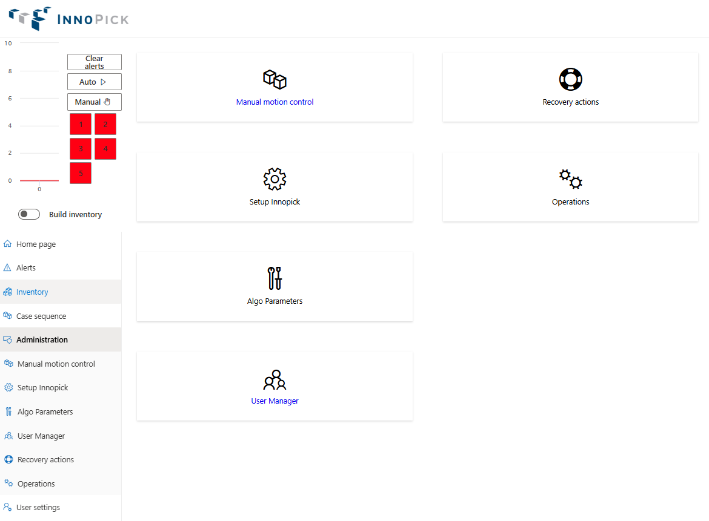
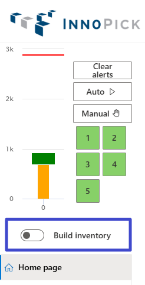
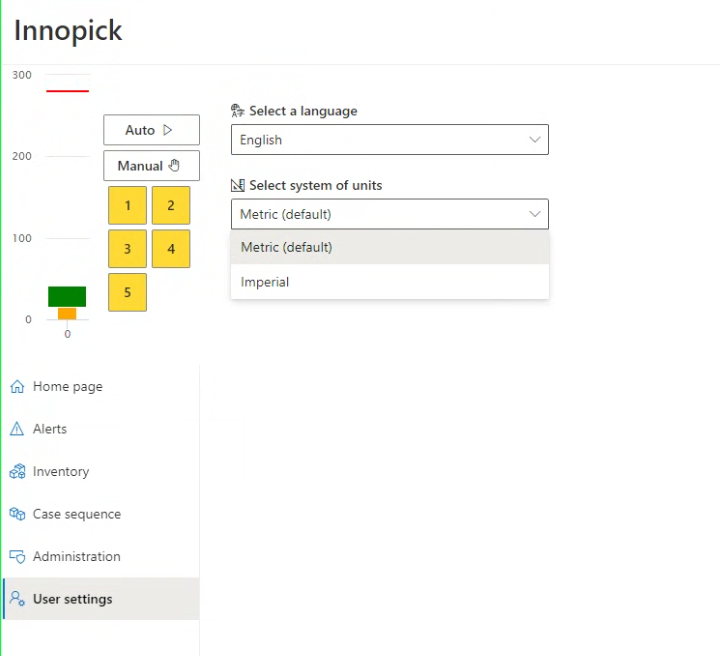

Administration Pages¶
Home > Main Screens > Administration
Overview¶
The Administration section contains system configuration, advanced troubleshooting tools, and user management features. Access to these pages is typically restricted to Admin and Manager roles.

Administration Section Pages¶
- Manual motion control - Manual jog controls for troubleshooting
- Setup InnoPick - System configuration parameters
- Algo Parameters - Algorithm tuning
- User Manager - Create and manage user accounts
- Recovery Actions - Advanced troubleshooting tools
- Operations - Level and Merge statuses / controls
- User Settings - Personal preferences
Manual motion control Page¶
Back to Top - Administration Pages Overview

The Manual motion control page provides manual control of InnoPick conveyors for troubleshooting and maintenance purposes.
Four Main Sections¶
- Level Operations - Control sequence conveyors
- Lane Operations - Control individual buffer lanes
- Level Saga Operations - Pre-program multiple sequence conveyor moves
- Lane Saga Operations - Pre-program multiple buffer lane moves
Level Operations¶

Manually jog the sequence conveyor of a selected level.
Controls¶
Select Level: - Choose which level to control
Jog Distance: - Default: 558mm (22 inches) - standard move - Can be customized as needed - Measured in millimeters
Acceleration: - Set in g's (gravitational force) - Controls how quickly the conveyor accelerates and decelerates
Direction: - Forward or reverse - Typically moves toward outfeed (forward)
When to Use¶
- Troubleshooting positioning issues
- Manual case positioning after alerts
- Testing conveyor operation
- Maintenance and setup
Important: Only use in Manual mode when production is stopped.
Lane Operations¶

Manually control individual storage lanes and clutch assemblies.
Controls¶
Level and Lane Selection: - Drop-down menus to select specific lane
Pop Up / Down: - Forces the lane's pop-up assembly to move up or down - Used for manual case handling
Distance: - Default: Width of product in lane (if present), otherwise 0mm - If "Fix Distance" option is unchecked, the system will automatically set the Jog lane distance to according to the product in the lane (if applicable)
Directions: - Storage: Move into the lane (backward) - Dispense: Move toward sequence conveyor (forward)
When to Use¶
- Clearing jammed cases
- Manual case positioning
- Testing lane operation
- Maintenance procedures
Caution: Be aware of case positions before jogging lanes.
Level & Lane Saga Operations¶

These interfaces allow pre-programming multiple moves in sequence.
To use these controls,
- Enter in the # of iterations and specify the level(s) & lane(s), as well as a delay.
- The delay is necessary to allow the system to complete the manual move before the next move in the sequence is commanded.
- While the manual moves are being executed, the page will display something like this:

Purpose¶
- Execute a series of moves
- Testing and validation after mechanical work
- Break-in of equipment at installation
- Advanced troubleshooting scenarios
Usage¶
Primarily used by: - System integrators - Advanced maintenance personnel - During commissioning and testing
Setup InnoPick Page¶
Back to Top - Administration Pages Overview

Sub-Sections: - Site Settings - Site Levels - Packages - Masking - Motion Controller - Buffer - Simulator Setup - Core Setup
The Setup InnoPick page contains configuration settings for InnoPick's internal operation. Access is typically restricted to Admin users and system integrators.
Site Settings¶
Back to Setup InnoPick Sub-Sections
Critical system-wide configuration parameters.
Gap Between Cases in Millimeters¶
The gap InnoPick maintains between cases stored in buffer lanes.
Purpose: - Prevents cases from pressing together - Allows smooth dispensing - Accommodates case size variations - Note: Do not change this parameter unless directed to system expert / remote support.
Manual Replenishment Empty Lanes Threshold¶
Minimum number of empty lanes required before IPM allows manual replenishment creation.
Purpose: - Ensures sufficient space for manual replenishments - Prevents overfilling storage capacity
Use Dynamic Replenishment Quantities¶
Enable/disable IPM's ability to dynamically adjust replenishment quantities based on demand patterns.
When enabled: - IPM analyzes usage patterns - Adjusts quantities automatically - Optimizes inventory levels
When disabled: - Uses static configured quantities - More predictable but less adaptive
Note: Should be managed by system integrators.
Max Consecutive Output Cases Per Destination¶
Limits consecutive cases sent to a single destination (Merge A, B, etc.).
Purpose: - Balances output across destinations - Prevents overwhelming single destination - Contingent on other function being enabled
Note: Should be managed by system integrators.
Sequence Conveyor Acceleration / Deceleration in Gs¶
Acceleration rate for sequence conveyor indexing moves.
Measured in: g's (gravitational force)
Considerations: - Higher = faster moves but more case disturbance - Lower = gentler but slower throughput - Balance between speed and stability
Additional Configuration Options¶
Other settings visible on this page are for: - Initial system setup - System integration - Advanced configuration
Warning: Do not change these without consulting system integrators.
Site Levels¶
Back to Setup InnoPick Sub-Sections

This page contains level-specific configuration settings: Lane Pitch in Millimeters - Value (in mm) representing the standard distance between storage lanes - Note: Values may differ slightly per level due to: - Chain stretch over time - Tensioning adjustments - Mechanical variations - See the Lane Pitch Adjustment Guide for guidance on how to adjust these parameters to ensure good centering on all lanes
Center Placement in millimeters - Controls the initial positioning of a case as it first enters InnoPick infeed. - See the Lane Pitch Adjustment Guide for guidance on how to adjust these parameters to ensure good centering on all lanes
Center offset in millimeters - Adjusts the expected centerpoint of infeed cases. - If there are midpoint alarms being generated despite the cases looking nicely centered, then this parameter needs to be adjusted. - Contact system integrators if adjustment is needed.
Length offset in millimeters - Adjusts the expected length by this amount
Target offset in millimeters - Adjusts the final case placement when dispensing a case
Send variables to Galil - Press this after making a change to one of the variables in this section, followed by the 'Submit' button at the top of the page.
Packages¶
Back to Setup InnoPick Sub-Sections
Product configuration page for system setup.
Access: System integrators during initial setup
Masking¶
Back to Setup InnoPick Sub-Sections
Configuration for masking certain system moves.
Access: System integrators during initial setup
Motion Controller¶
Back to Setup InnoPick Sub-Sections
Connection and configuration for the motion controller.
Access: System integrators during initial setup
Buffer¶
Back to Setup InnoPick Sub-Sections

Configuration for accumulation management and output buffering.
Number Of Cases To Exit Merge In The Accumulation LookAhead¶
How many cases IPM considers when forecasting and scheduling output.
Impact: - Higher number: More aggressive scheduling, uses more accumulation - Lower number: More conservative, leaves accumulation space unused
Too high: Risk of misjudging available space, may block output more often Too low: Underutilizes accumulation, reduces throughput Recommendation: Determine empirically based on system performance
Buffer Enabled¶
(Default = On)
When enabled, InnoPick keeps track of the cases in the outbound accumulation to optimize outbound scheduling when space is available and pause outbound scheduling to allow inbound to keep entering when the outbound is full.
When enabled: - IPM actively manages accumulation - Schedules output based on available space - Prevents overloading downstream equipment
When disabled: - IPM schedules output independently of accumulation status - Simpler but may cause downstream congestion issues
Build Inventory¶
InnoPick can operate in two modes regarding accumulation:
Normal Operation Mode¶
- IPM schedules as many output cases as possible, using Buffer logic if that option (see above) is enabled
- Assumes downstream conveyors advance at nominal rate
- Maximizes throughput
- May occasionally have to stop if outbound flow stops unexpectedly
Build Inventory Mode¶
- IPM prioritizes building lane inventory over outputting cases
- Only schedules output cases that will definitely fit in current accumulation space
- More conservative approach
- Level should not have to stop due to full accumulation
- Allows continuous replenishment induction
When to enable: - Starting production with low inventory - Recovering from downstream stoppage - Building to nominal inventory levels
When to disable: - Normal production operations - When inventory is at nominal or above - To maximize throughput
Note: Build Inventory Mode can be turned on and off directly from the set of controls that are always visible in the top left corner of the InnoPick Manager screen: 
Destination Decoupling Mode Enabled - Allows InnoPick to schedule cases for multiple destinations in parallel based on downstream accumulation availability and inventory. - If InnoPick cannot schedule the next outbound case for the next priority pallet, it is allowed to look for pallets further down the sequence for other destinations and attempt scheduling them if accumulation and inventory allows it. - This mode is affected by the two parameters below:
Destination decoupling mode max pallet offset - This is configuration parameter for the "Destination Decoupling Mode Enabled" above. - See the description beneath the setting.
Destination decoupling mode max case offset - This is configuration parameter for the "Destination Decoupling Mode Enabled" above. - See the description beneath the setting.
Destination A / B Accumulation¶

These settings teach InnoPick about various accumulation zones for its algorithmic calculations.
Shared zone accumulation (# of zones) - This setting teaches InnoPick how many cases can fit between the exit of the merge and the palletizer.
Level 1 to 5: Accumulation Length in Mm - This setting teaches InnoPick the length of low pressure accumulation where cases are accumulated in a way that they bunch up together with no gaps.
Level 1 to 5: Zone Accumulation (# of zones) - This setting teaches InnoPick how many individual cases can be accumulated between the exit of InnoPick and the merge.
Simulator Setup¶
Back to Setup InnoPick Sub-Sections
Configuration page for developers and system testing.
Access: System integrators and developers
Core Setup¶
Back to Setup InnoPick Sub-Sections
Core system parameters for developers.
Access: System integrators and developers
Algo Parameters¶
Back to Top - Administration Pages Overview

The Algo Parameters page lists parameters that control various elements of InnoPick's embedded algorithms.
Purpose¶
- Fine-tune system performance
- Adjust algorithm behavior
- Optimize for specific products or operations
Access Level¶
Parameters are meant to be altered by: - System architects - System administrators - Personnel with deep understanding of InnoPick operation
Documentation¶
Each parameter includes a description on the page explaining its purpose and effect.
Note: Changes to algorithm parameters can significantly affect system behavior.
User Manager¶
Back to Top - Administration Pages Overview

The User Manager page allows Admin-level users to create and manage user accounts for InnoPick Manager.
User Roles¶
Each user account is assigned one of these roles:
Admin¶
- Full access to all controls and options
- Can create and manage other user accounts
- Can modify system configuration
- Can access all pages and features
Manager¶
- Access to all operational settings
- Cannot modify site settings or core configuration
- Can manage production operations
- Can resolve alerts and manage inventory
Clerk¶
- Access necessary to operate system for production
- Cannot change configuration settings
- Can monitor status and clear alerts
- Limited administrative access
Terminal User¶
- Access only to MixMaster Terminals
- There are no Terminals within InnoPick Manager, but since User Accounts are shared between the systems, the option appears here.
Creating a New User¶

To create a new user account:
- Click "Create New User" or similar button
- Enter required information:
- Username: Login identifier
- Password: Initial password
- Full Name: User's actual name
- Email: Contact email address
- Role: Select from Admin, Manager, Clerk, Terminal User
- Save the new user
Managing Existing Users¶
From the User Manager page, you can: - View all user accounts - Edit user information - Change user roles - Disable or delete accounts - Reset passwords
Security Best Practices¶
- Assign the minimum necessary role for each user
- Review user accounts periodically
- Disable accounts for personnel no longer needing access
- Use strong passwords
- Change default passwords immediately
Recovery Actions¶
Back to Top - Administration Pages Overview

Recovery Actions are built-in features for dealing with specific issues that arise during operation.
Purpose¶
Provide operators and support personnel with: - Tools for recovering from unusual situations - Options for resolving issues that can't be handled through normal procedures - Advanced troubleshooting capabilities
Recovery Action Groups¶
General¶
- System-wide recovery actions
- General troubleshooting tools
Buffer¶
- Actions related to accumulation management
- Output buffering issues
Motion Controller¶
- Actions related to conveyor motion
- Drive and motor issues
Core¶
- Core system recovery actions
- Advanced system state management
Using Recovery Actions¶
Recovery actions include a description of what it does and some of them require the operator to put in some required information (in the Action column). - If a recovery action has an input field for the operator to put in information, it typically will not work unless it has that information.
Important: - Understand the action before executing - Document which recovery actions were used - Consult with support if unsure
Note: The list of available Recovery Actions may change depending on: - System version - Integrator customizations - Specific installation needs
Most Commonly Used Recovery Actions¶
Set case pending completion¶
This recovery action resends the outfeed case data to the downstream conveyor system. - This is used when recovering from issues at the outbound transition (handshake), when the downstream conveyor system does not have the tracking data for the case currently on the last InnoPick position.
Set InCasLen¶
This recovery action re-sends the case length to the motion controller for the currently inducting product on a given level. - This is used when after a system restart or some other abnormal stoppage, cases are not entering InnoPick infeed even though everything else is good, and the replenishment is in the Inducting state.
Set OuXfEna=1 for level¶
This recovery action simulates the "OK to Receive" signal from the downstream conveyor system to InnoPick, which is the last step in the outfeed handshake process. - This can be used when the downstream conveyor system has tracking data for the case, but InnoPick is not advancing the physical case from the last position.
Clear alarm on level¶
This recovery action sends a 'clear alarm' signal to the motion controller for a given level. - This is used when a fault or alert on the InnoPick system refuses to clear normally, but the underlying conditions that caused the alarm have been resolved (meaning it should be able to clear).
Clear level processor error¶
This recovery action clears internal processor errors and restarts the level processor for a given level. - This is used after certain critical faults whose descriptions indicate to the operator that the level processor has been stopped.
Operations¶
Back to Top - Administration Pages Overview
Level status¶

- This page provides an overview of each level's various statuses as well as:
- Last case data sent (CaseRef #)
- Last pending completion (CaseRef #)
Merges state¶

Configuration for downstream merge points (where the different levels combine to a single conveyor that feeds one of the palletizers).
Merge A / B Enabled¶
Enable or disable individual downstream destinations.
Purpose: - Route all cases to operational Merge if one fails - Handle downstream equipment failures - Temporary operational adjustments
Usage: - Last resort when downstream fault cannot be resolved - Will not affect cases already on sequence conveyors -- those cases that are already scheduled for a certain destination will retain their destination. - High likelihood that remote support interventions will be required if this is changed during production.
Caution: Only use when absolutely necessary and coordinate with support. Can have unintended effects and complications.
Destination assignment mode¶

There are two possible settings for the destination assignment mode: 1. None 2. Just-in-time
None: This is the regular destination mode: - InnoPick will initially load balance pallet assignment when receiving a new case sequence - Will never change a destination unless a destination is disabled
Just in time: - InnoPick will initially load balance pallet assignment when receiving a new case sequence (like normal) - InnoPick may change the destination when the first case of a pallet gets scheduled, based on the remaining accumulation available to load balance assignments "Just-in-Time" - In this mode, InnoPick responds dynamically to current accumulation levels and assigns pallets to the destination with the most capacity.
User Settings¶
Back to Top - Administration Pages Overview 
The User Settings page contains personal preferences that individual users can configure.
Available Settings¶
Settings include: - Language preferences (if applicable) - System of units (metric vs imperial)
Accessing User Settings¶
- Click User Settings in the left navigation menu
- Settings are specific to your user account
Related Topics¶
- Monitoring Production - Using admin tools during operation
- Troubleshooting - When to use recovery actions
- Products Page - Product configuration
Navigation: ← Case Sequence | Next: Troubleshooting →